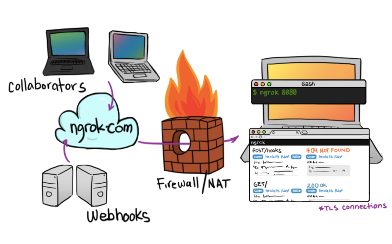
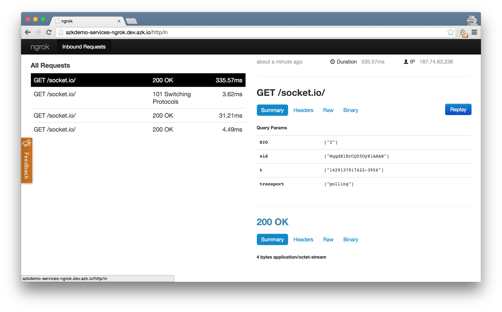
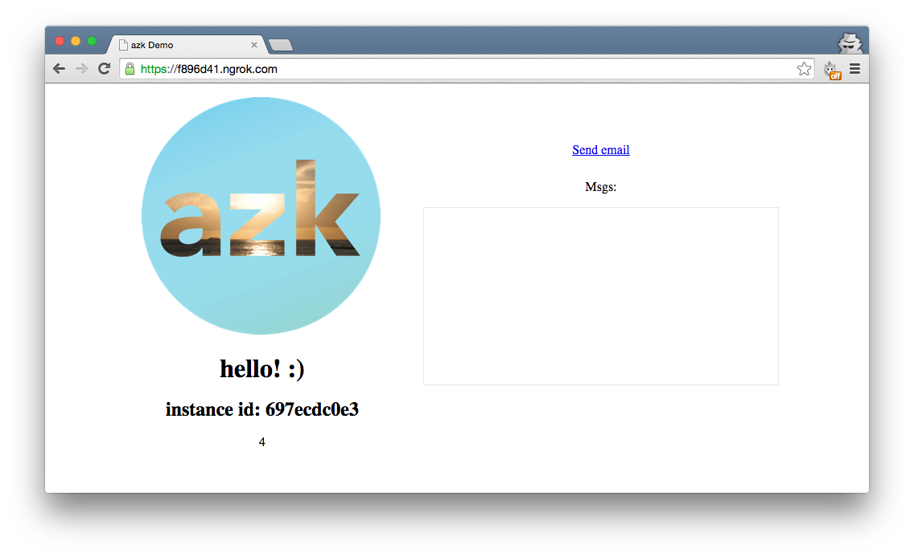
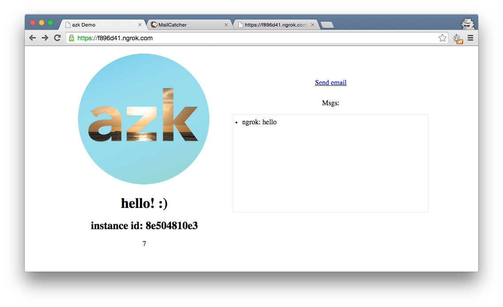

Screenshot da página do GitHub do ngrok
Nota: Você pode checar o resultado final na branch ngrok-final do projeto azkdemo-services.
ngrok é um proxy reverso que cria um "túnel" seguro a partir de um endpoint público para um web service sendo executado localmente. Em outras palavras, você pode utilizar o ngrok para expor uma porta em seu sistema, por exemplo, a porta em que sua aplicação Node.js está rodando, a uma URL pública. Ele também disponibiliza uma interface web muito legal para analisar todo o tráfego enviado através da sua aplicação, e até mesmo repetir chamadas (GET, POST, etc).

Um cenário onde ngrok pode ser realmente útil é se você precisa testar webhooks. Um webhook é basicamente um request POST feito para o seu serviço web. Um monte de empresas como GitHub, Evernote, SendGrid, Twilio, oferecem webhooks para diferentes fins.
No nosso caso, o que nós vamos fazer é adicionar o ngrok a nossa aplicação, e para simplificar, adicionar uma endpoint GET que podemos usar para adicionar uma mensagem para a caixa de mensagens do nosso aplicativo, semelhante ao que aconteceu quando mandamos e-mails clicando no botão "Send email" na última seção.
Vamos começar! Vamos assumir que você está vindo da seção anterior, MailCatcher. Caso queira começar diretamente dessa seção, baixe o projeto base e troque de branch executando:
$ git clone https://github.com/azukiapp/azkdemo-services.git
$ git checkout mailcatcher-final
Antes de tudo, vamos adicionar o sistema ngrok ao nosso Azkfile.js. Abra o arquivo e adicione-o no final:
...
// MailCatcher system
mail: {
...
}
// ngrok system
ngrok: {
// Dependent systems
depends: ["azkdemo-services"],
// More images: http://images.azk.io
image: {"docker": "azukiapp/ngrok:latest"},
wait: {"retry": 20, "timeout": 1000},
http: {
domains: [
"#{manifest.dir}-#{system.name}.#{azk.default_domain}",
],
},
ports: {
// exports global variables
http: "4040",
},
envs: {
// set instances variables
NGROK_CONFIG: "/ngrok/ngrok.yml",
NGROK_LOG: "/ngrok/logs/ngrok.log",
},
},
}
Você pode ver que nós adicionamos o nosso sistema principal "azkdemo-services" como uma dependência para o nosso sistema "ngrok". Por que isso?
Ao contrário de outros serviços, como o MailCatcher, o ngrok precisa de um serviço web funcionando em uma porta antes que possa ser executado. Ao adicionar a nossa aplicação Node.js para o parâmetro depends, podemos garantir que isso será o caso.
Só mais uma coisa antes de executarmos nossos sistemas, nós precisamos passar para o ngrok não só a porta, mas a URL onde ele pode encontrar nossa aplicação. Então, vamos fazer isso exportando uma variável de ambiente no nosso sistema "azkdemo-services". Vamos adicionar a propriedade export_envs nele:
...
'azkdemo-services': {
// Dependent systems
depends: ["mail", "redis"],
// More images: http://images.azk.io
image: {"docker": "azukiapp/node:0.12"},
// Steps to execute before running instances
provision: [
"npm install",
],
workdir: "/azk/#{manifest.dir}",
shell: "/bin/bash",
command: "npm start",
wait: {"retry": 20, "timeout": 1000},
mounts: {
'/azk/#{manifest.dir}': path("."),
'/azk/#{manifest.dir}/node_modules': persistent("#{system.name}-node_modules"),
},
scalable: {"default": 1},
http: {
domains: [ "#{system.name}.#{azk.default_domain}" ]
},
envs: {
// set instances variables
NODE_ENV: "dev",
},
export_envs: {
// exports variables for dependent systems
APP_URL: "#{system.name}.#{azk.default_domain}:#{net.port.http}",
},
},
...
}
A variável APP_URL estará disponível para o sistema "ngrok", e usará isso para expor nossa aplicação Node.js. Vamos levantar nossos sistemas:
$ azk start
Você deverá ver o seguinte output:
┌───┬─────────────────────┬───────────┬──────────────────────────────────────────┬────────────────────────────┬──────────────┐
│ │ System │ Instances │ Hostname/url │ Instances-Ports │ Provisioned │
├───┼─────────────────────┼───────────┼──────────────────────────────────────────┼────────────────────────────┼──────────────┤
│ ↑ │ redis │ 1 │ dev.azk.io │ 1-6379:49351 │ - │
├───┼─────────────────────┼───────────┼──────────────────────────────────────────┼────────────────────────────┼──────────────┤
│ ↑ │ mail │ 1 │ http://mail.azkdemo.dev.azk.io │ 1-smtp:49358, 1-http:49357 │ - │
├───┴─────────────────────┴───────────┴──────────────────────────────────────────┴────────────────────────────┴──────────────┤
│ ↑ │ azkdemo-services │ 1 │ http://azkdemo-services.dev.azk.io │ 1-http:49352 │ - │
├───┼─────────────────────┼───────────┼──────────────────────────────────────────┼────────────────────────────┼──────────────┤
│ ↑ │ ngrok │ 1 │ http://azkdemo-services-ngrok.dev.azk.io │ 1-http:49340 │ - │
└───┴─────────────────────┴───────────┴──────────────────────────────────────────┴────────────────────────────┴──────────────┘
Vamos abrir nossa URL do ngrok: http://azkdemo-services-ngrok.dev.azk.io
Legal, o ngrok está funcionando e já podemos verificar sua interface de administração que nos permite analisar e repetir requests. Uma coisa que ainda não conseguimos fazer é realmente ver nossa URL que o ngrok criou como um endpoint público. Então vamos corrigir isso.
Primeiro de tudo, vamos criar uma nova pasta chamada "logs" no diretório do projeto:
$ mkdir logs
Agora, o que nós podemos fazer é "sincronizar" todos os arquivos de log criados dentro do sistema ngrok ao nosso diretório do projeto. Vamos fazer isso editando o Azkfile.js, dentro do sistema ngrok, e adicionando o parâmetromounts:
...
// ngrok system
ngrok: {
// Dependent systems
depends: ["azkdemo-services"],
// More images: http://images.azk.io
image: {"docker": "azukiapp/ngrok:latest"},
wait: {"retry": 20, "timeout": 1000},
http: {
domains: [
"#{manifest.dir}-#{system.name}.#{azk.default_domain}",
],
},
ports: {
// exports global variables
http: "4040",
},
mounts: {
'/ngrok/logs' : path("./logs"),
},
envs: {
// set instances variables
NGROK_CONFIG: "/ngrok/ngrok.yml",
NGROK_LOG: "/ngrok/logs/ngrok.log",
},
},
...
}
O parâmetro mounts irá definir:
'ngrok/logs': a pasta e seu conteúdo, criadas dentro de nosso sistema (ngrok neste caso) que queremos "sincronizar".path("./logs)": o parâmetro path vai definir onde esses arquivos estarão disponíveis dentro da pasta do nosso projeto. Nesse caso, os arquivos estarão na pasta ./logs que criamos no passo anterior.Vamos reiniciar o nosso sistema para atualizá-lo com essas alterações:
$ azk restart
Agora, depois de reiniciar o sistema e eles estarem funcionando, você deve ver um novo arquivo criado dentro da nossa pasta logs chamado de ngrok.log. Abra o arquivo e você verá um monte de outputs de log do ngrok. Procure por "Tunnel established at" e você será capaz de ver o nosso endpoint público que o ngrok disponibilizou.
Copie esse endereço (algo como https://f896d41.ngrok.com) no seu navegador e abra-o. Você deverá ver exatamente a sua aplicação:

A diferença de acessar essa URL ao invés da mostrada no output do comando azk start é que você pode compartilhar ela com outras pessoas, e elas serão capazez de acessá-la, o que é exatamente a razão pela qual elas são úteis para testar rapidamente webhooks sem a necessidade de realizar o deploy de sua aplicação.
Assim como dissemos no início do tutorial, agora vamos adicionar um endpoint GET em nossa aplicação que irá adicionar uma mensagem a caixa de mensagens. Abra o arquivo src/index.js e adicione um endpoint /webhook a ele:
...
// Send mail
app.get('/mail', require('./send_email.js'));
// Webhooks
app.get('/webhook', function(req, res) {
io.sockets.emit('msgs', req.param('msg'));
res.send('Message sent');
});
// setup views with ejs
app.use('/public', express.static(path.join(rootPath, 'public')));
...
Salve o arquivo, e uma vez que estamos usando nodemon, ele irá recarregar automaticamente a nossa aplicação. Sua URL do ngrok também continuará a mesma. Se você já tinha uma aba aberto do passo anterior, basta abrir uma nova com o mesmo endereço (novamente, algo como https://f896d41.ngrok.com). Agora você deve ter duas abas abertas com a nossa aplicação. Na segunda aba, adicione ao final do endereço o seguinte:
https://f896d41.ngrok.com/webhook?msg=hello
A página deve atualizar e mostrar um texto "Message sent"! Volte para a primeira aba, e você deve ver uma mensagem dizendo "ngrok: hello":

E é isso!
Testar um webhook de outro serviço como os mencionadas no início deve ser tão simples quanto mudar o endpoint /webhook para POST ao invés de GET, e, em seguida, trabalhar com os dados que serão enviados como parte do objeto req. :)
Nota: Você pode checar o resultado final na branch ngrok-final do projeto azkdemo-services.